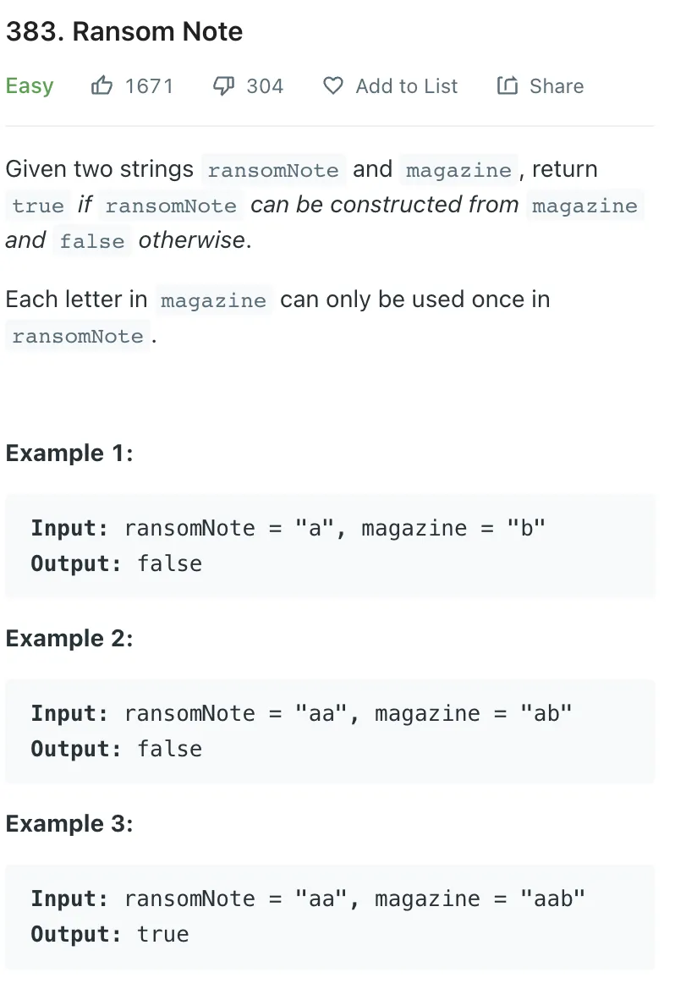
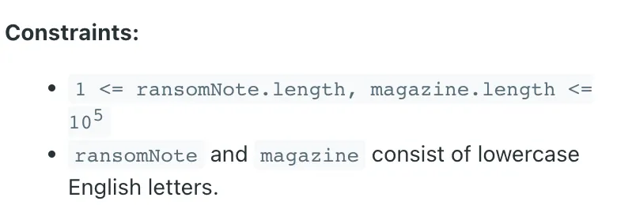

383. Ransom Note
考過的公司：Amazon
Question


✍🏽 My Solution
Runtime: 2 ms, faster than 99.10% of Java online submissions for Ransom Note. Memory Usage: 42.7 MB, less than 81.52% of Java online submissions for Ransom Note.
class Solution {
public boolean canConstruct(String ransomNote, String magazine) {
if (ransomNote.length() > magazine.length()) {
return false;
}
int[] arr = new int[26];
// 记录 magazine里各个字符出现次数
for (int i = 0; i < magazine.length(); i++) {
arr[magazine.charAt(i) - 'a']++;
}
for (int i = 0; i < ransomNote.length(); i++) {
char c = ransomNote.charAt(i);
// 遍历ransomNote，在record里对应的字符个数做--操作
// 如果小于零说明 ransomNote裡面有的字符，magazine没有
if(arr[c - 'a'] == 0 || --arr[c - 'a'] < 0) {
return false;
}
}
return true;
}
}
🧠 Thought Process
- Why did I choose this particular implementation?
- 參考力扣
- 用一個長度為26的數組紀錄magazine裡字母出現的次數，再用ransomNote驗證這個數組是否包含了ransomNote需要的所有字母
- What is the time/space complexity of my solution? How do I know?
- time: O(n+m) 兩個string的大小
- space: O(n) 字符集大小为 n = 26